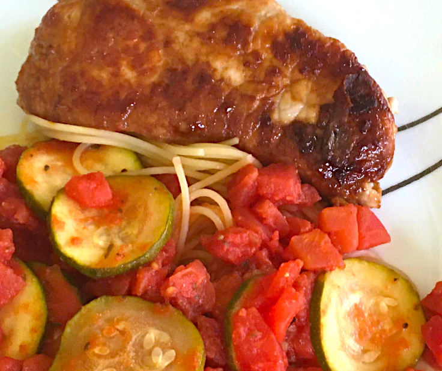

Zucchini Pasta and Pork Chops

An unholy marriage of pasta and meat that will make Italians recoil in horror and shriek in pain. Looks tasty tho.
The following serves four people and it should take about 40 minutes to cook:
Ingredients
- 8 ounces zucchini
- 1 clove garlic
- 1 tablespoon & 1 teaspoon olive oil
- 12 ounces canned diced tomatoes with chilies
- 1 dash tarragon
- 1 dash oregano
- 1 dash crushed red pepper
- 2 teaspoons olive oil
- 4 pork chops
- 6 ounces angel hair pasta
- 1 slice sourdough bread
Steps
- Preheat oven to 400 degrees.
- Butter bread and wrap in foil. Place in oven.
- Chop zucchini into small pieces. Place in a shallow saucepan along with garlic and olive oil.
- Cook over medium heat, stirring constantly until zucchini is lightly browned.
- Add tomatoes and seasonings to zucchini. Turn heat to low and continue cooking stirring occasionally.
- Place olive oil and pork chops in a skillet and brown on one side over medium heat. (About 10 minutes). Sprinkle with salt and pepper if desired.
- Fill a saucepan with water and turn on high.
- When water comes to a full boil, add pasta. Reduce heat to low and continue cooking until done. (About 5 minutes). Stir often.
- Turn pork chops and brown on other side.
- Drain pasta and rinse. Serve topped with zucchini.